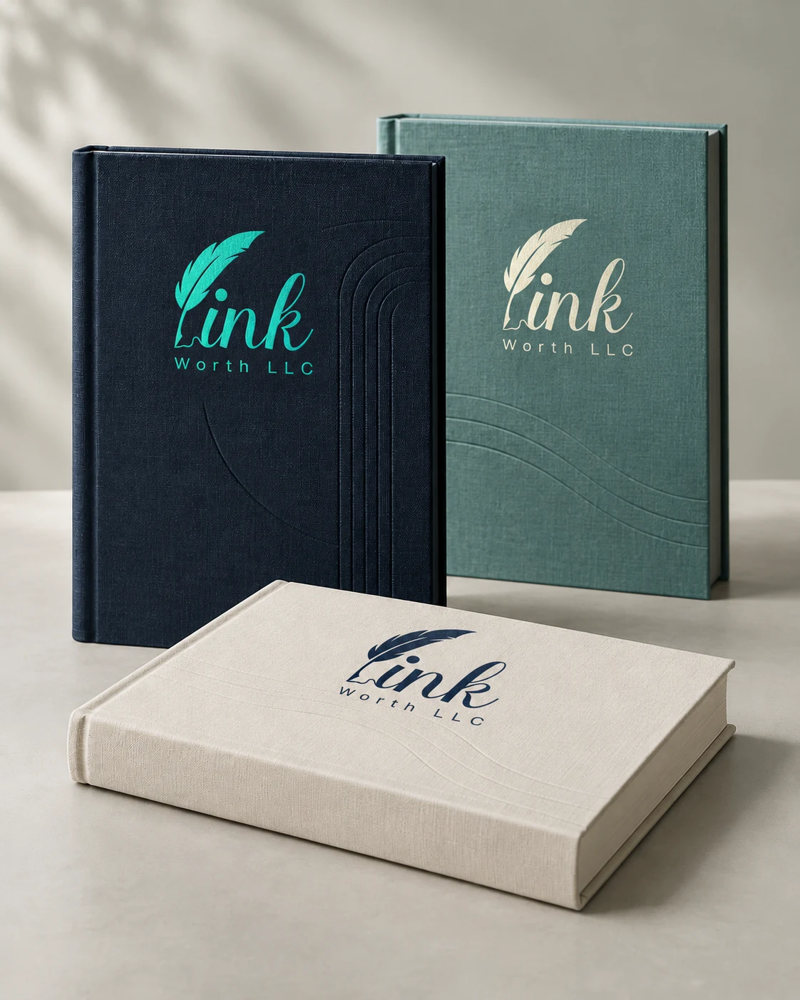
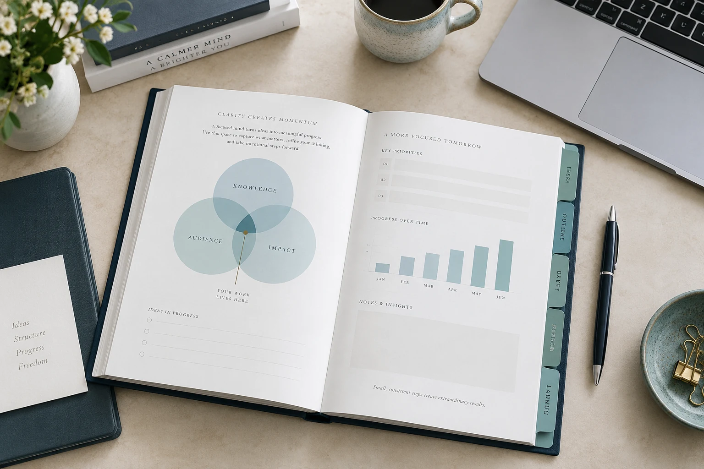
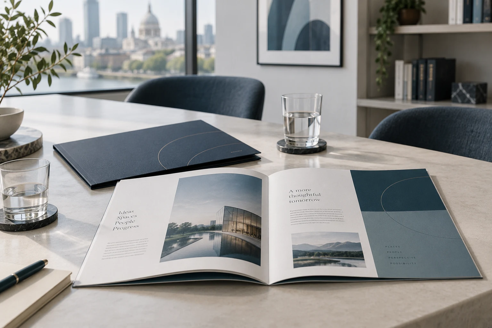
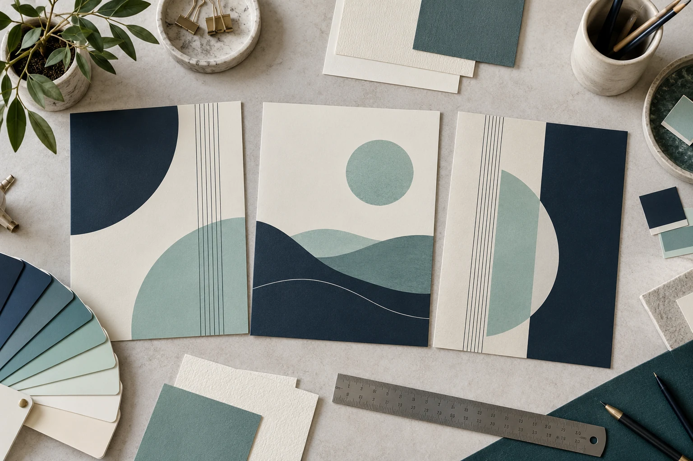
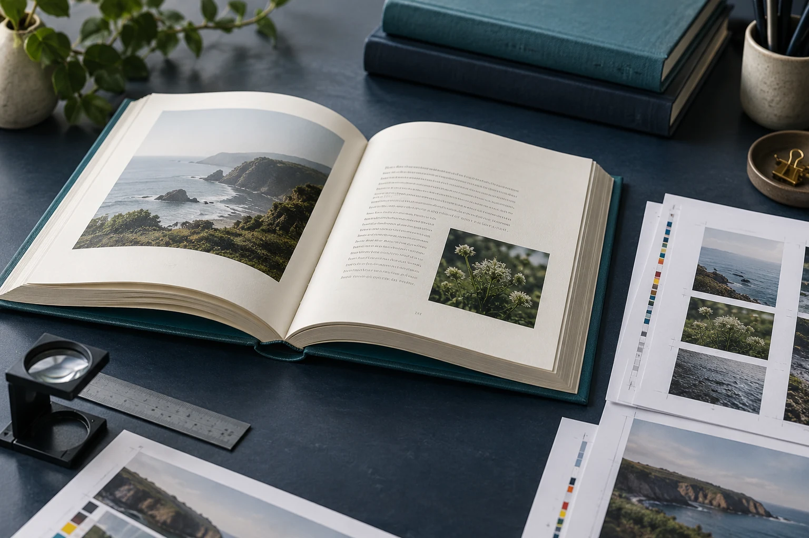
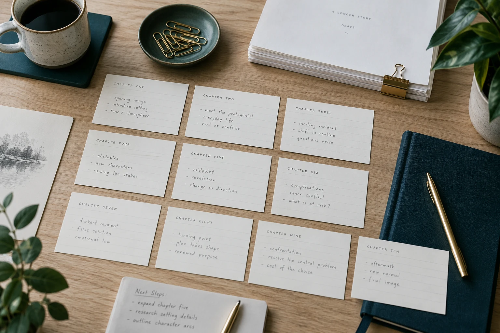

Authors & storytellers
Turn the story you have been carrying into a reading experience that feels complete.
- Fiction and personal narratives
- Memoirs and reflective writing
- First manuscripts and revised drafts
From the first idea to the final page. Thoughtful writing, design, and publishing support for authors and businesses.

Something worth writing.
Something worth holding.
Bring us your idea, your draft, or your next big ambition. We’ll help you find the way forward.
Give your ideas clarity, structure, and a voice that feels like you.
Explore service 02 /Thoughtful covers and beautifully considered pages, inside and out.
Explore service 03 /A clear path from a finished manuscript to a book ready for readers.
Explore serviceInk Worth is built around a simple belief: meaningful ideas deserve thoughtful execution. We bring words, design, and publishing together with care for the details that make your work yours.
Get to know Ink WorthA personal story, a professional perspective, or a publication with a business purpose. There is room for all three.
Turn the story you have been carrying into a reading experience that feels complete.

Give your knowledge a clear structure and turn your experience into a useful resource.

Create publications that express your identity and make complex ideas easier to understand.
Each project has its own starting point. We build the next steps around yours.
We begin with your purpose, audience, and ambitions. Share your manuscript, outline, or idea so we can understand the work ahead.
Together, we define the scope: the services you need, the materials to prepare, and the milestones that will guide the project.
Words and design come together through considered drafts and feedback. You help steer the details that make the project feel like yours.
We review the agreed deliverables and prepare the final materials, with clear guidance on how to use them and what comes next.
The right support at the right stage, with your reader at the heart of every decision.
Turn a rough idea or an existing draft into writing with direction. We help you shape the structure, refine the language, and bring your perspective into focus.
Explore writing & editing
A compelling cover opens the conversation. Considered typography, space, and page flow keep it going. Bring the outside and inside of your book together in one coherent design.
Explore book design
Understand the steps between your final draft and publication. Plan the formats, prepare the agreed files, and give your book a clear path toward its next chapter.
Explore publishing supportOur role is to bring clarity to your words and intention to your design. From a small editorial detail to the feeling of a finished cover, every decision should help your idea connect with its reader.
Discover our approachPractical guidance for the decisions that come before the first draft, design, or enquiry.

Understand the difference between developing an idea, refining a manuscript, and preparing a final proof.
Explore the guidanceMatch your current project stage to a useful next step and the materials you need to bring.
Explore the guidanceGather your audience, goals, timeline, and priorities into a brief that gives your project direction.
Explore the guidanceYes. A short outline, a few notes, or a description of your audience is a useful starting point. The first step is to clarify what you want to create and identify the support that would help you move forward.
You can discuss a focused piece of work, such as editing an existing draft or designing a cover, as well as support across several stages. The scope is agreed around your project.
Manuscript length, its current condition, design complexity, required formats, and the amount of revision all affect the scope. Share these details and any target date so the work can be planned realistically.
The same care for words and design applies to business guides, workbooks, brand stories, and educational materials. Tell us the purpose and who will read it so we can discuss the right approach.